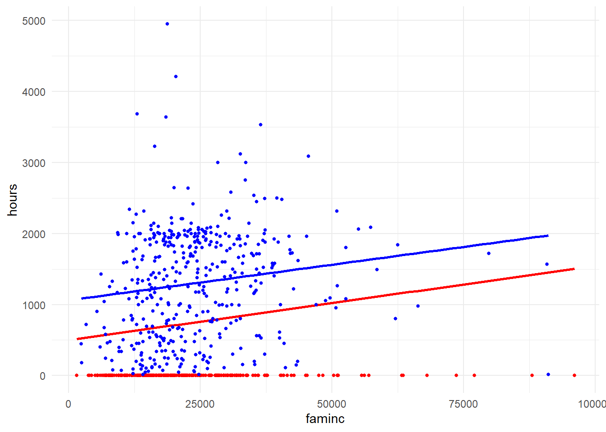

Konu 15 Sınırlı Bağımlı Değişkenli Regresyon Modelleri
Artık, bağımlı değişkenin aldığı değerlere sınırlama gelecek.
library(readxl);library(tidyverse);library(magrittr);library(VGAM);library(truncreg)
setwd("C:/Users/datanerd/Desktop/Github/rEkonometri/data")
df1 <- read_excel("Table11_1.xls")
df2 <- read_excel("Table11_7.xls")Bir uygulama ile gösterelim. Yapılan bir ampirik çalışma ile çeşitli sosyoekonomik değişkenlerin evli kadınların işgücü piyasasındaki çalışma süreleri üzerindeki etkileri belirlenmeye çalışılmış. Veriler 753 evli kadına aittir. İşgücü piyasası dedik ama bu 753 evli kadının 428’i çalışıyor. Kalan 325’i için çalışma saatleri sıfır diyebiliriz. İşte konu burada başlıyor.
## tibble [753 x 9] (S3: tbl_df/tbl/data.frame)
## $ hours : num [1:753] 1610 1656 1980 456 1568 ...
## $ age : num [1:753] 32 30 35 34 31 54 37 54 48 39 ...
## $ educ : num [1:753] 12 12 12 12 14 12 16 12 12 12 ...
## $ exper : num [1:753] 14 5 15 6 7 33 11 35 24 21 ...
## $ expersq: num [1:753] 196 25 225 36 49 ...
## $ faminc : num [1:753] 16310 21800 21040 7300 27300 ...
## $ kidsl6 : num [1:753] 1 0 1 0 1 0 0 0 0 0 ...
## $ hwage : num [1:753] 4.03 8.44 3.58 3.54 10 ...
## $ lfp : num [1:753] 1 1 1 1 1 1 1 1 1 1 ...Bağımlı değişken:
- hours: Saatlik çalışma süresi
Bağımsız değişken(ler):
age: Yaş
educ: Eğitim süresi
exper: Deneyim
expersq: Deneyimin karesi
faminc: Aile geliri
kidsl6: 6 yaş altı çocuk sayısı
hwage: Kocanın ücreti
Sıradan En Küçük Kareler uygulayalım.
##
## Call:
## lm(formula = hours ~ ., data = df1 %>% dplyr::select(-lfp))
##
## Residuals:
## Min 1Q Median 3Q Max
## -1619.1 -491.5 -80.5 484.0 3636.3
##
## Coefficients:
## Estimate Std. Error t value Pr(>|t|)
## (Intercept) 1.298e+03 2.319e+02 5.597 3.06e-08 ***
## age -2.955e+01 3.864e+00 -7.648 6.32e-14 ***
## educ 5.064e+00 1.256e+01 0.403 0.6868
## exper 6.852e+01 9.399e+00 7.290 7.91e-13 ***
## expersq -7.792e-01 3.085e-01 -2.525 0.0118 *
## faminc 2.899e-02 3.201e-03 9.057 < 2e-16 ***
## kidsl6 -3.956e+02 5.564e+01 -7.110 2.73e-12 ***
## hwage -7.051e+01 9.025e+00 -7.814 1.89e-14 ***
## ---
## Signif. codes: 0 '***' 0.001 '**' 0.01 '*' 0.05 '.' 0.1 ' ' 1
##
## Residual standard error: 712 on 745 degrees of freedom
## Multiple R-squared: 0.3385, Adjusted R-squared: 0.3323
## F-statistic: 54.47 on 7 and 745 DF, p-value: < 2.2e-16İlk aşamada sonuçların iyi çıktığını görüyoruz ama 325 kadının çalışmadığını göz önüne alarak temkinli yaklaşmalıyız.
Şimdi bir de çalışan 428 kadına ait verileri kullanarak model kuralım.
##
## Call:
## lm(formula = hours ~ ., data = df1 %>% filter(lfp == 1))
##
## Residuals:
## Min 1Q Median 3Q Max
## -1646.7 -517.6 59.9 462.2 3439.6
##
## Coefficients: (1 not defined because of singularities)
## Estimate Std. Error t value Pr(>|t|)
## (Intercept) 1.817e+03 2.964e+02 6.130 2.02e-09 ***
## age -1.646e+01 5.365e+00 -3.067 0.002301 **
## educ -3.836e+01 1.607e+01 -2.388 0.017398 *
## exper 4.949e+01 1.373e+01 3.603 0.000352 ***
## expersq -5.510e-01 4.169e-01 -1.322 0.187010
## faminc 2.739e-02 3.995e-03 6.855 2.55e-11 ***
## kidsl6 -2.438e+02 9.216e+01 -2.646 0.008455 **
## hwage -6.651e+01 1.284e+01 -5.179 3.47e-07 ***
## lfp NA NA NA NA
## ---
## Signif. codes: 0 '***' 0.001 '**' 0.01 '*' 0.05 '.' 0.1 ' ' 1
##
## Residual standard error: 691.8 on 420 degrees of freedom
## Multiple R-squared: 0.2188, Adjusted R-squared: 0.2058
## F-statistic: 16.81 on 7 and 420 DF, p-value: < 2.2e-16Önceki modelde educ parametresi anlamlı değilken bu modelde anlamlı çıktı. Tabi sansürlenmiş olsa da bu sonuçlara da temkinli yaklaşmamız gerekiyor. Çünkü sansürlenmiş regresyon modellerine ait Sıradan En Küçük Kareler tahminleri yanlı olup tutarlı değildir.
İki modelin eğim parametrelerinin neden farklı olabileceğini grafikler ile gösterelim. Bunun için hours ile faminc değişkenlerini alalım.
ggplot() +
geom_point(data = df1, aes(x = faminc, y = hours), size = 1, color = "red") +
geom_smooth(data = df1, aes(x = faminc, y = hours), method = "lm", formula = y~x, color = "red", se = FALSE) + #325 gözlem yatay eksenin üzerinde = 0
geom_point(data = df1 %>% filter(lfp == 1), aes(x = faminc, y = hours), size = 1, color = "blue") +
geom_smooth(data = df1 %>% filter(lfp == 1), aes(x = faminc, y = hours), method = "lm", formula = y~x, color = "blue", se = FALSE) +
theme_minimal()
Sansürlenmiş örneklemleri aşmak için tobit modelini kullanacağız.
Kısa bir bilgi: Tobin (tobit regresyon modeli geliştiricisi), ilk kez dayanıklı tüketim malları üzerine hane halkı harcamalarını analiz ederken, kimi ailelerin dayanıklı tüketim malı harcaması gibi bir harcama kaleminin olmaması sebebiyle bağımlı değişkeni negatif çıkan bir regresyon türü ile karşılaşmıştır. Tobin bu çalışmasında, harcamanın hiçbir zaman negatif olmayacağı gerçeğinden hareketle hane halkı geliri, belli bir düzeyi geçene kadar bu değişkene sıfır değeri atamıştır. O yıllarda tanımladığı bu model sansürlü regresyon modeline klasik bir örnektir.
##
## Call:
## vglm(formula = hours ~ ., family = tobit, data = df1 %>% dplyr::select(-lfp))
##
## Pearson residuals:
## Min 1Q Median 3Q Max
## mu -10.1977 -0.7731 -0.1636 0.7504 4.053
## loglink(sd) -0.9917 -0.5884 -0.2539 0.1925 13.300
##
## Coefficients:
## Estimate Std. Error z value Pr(>|z|)
## (Intercept):1 1.126e+03 3.796e+02 2.967 0.003010 **
## (Intercept):2 6.964e+00 3.557e-02 195.793 < 2e-16 ***
## age -5.411e+01 6.549e+00 -8.262 < 2e-16 ***
## educ 3.865e+01 2.063e+01 1.873 0.061019 .
## exper 1.298e+02 1.597e+01 8.131 4.24e-16 ***
## expersq -1.845e+00 5.012e-01 -3.681 0.000233 ***
## faminc 4.077e-02 5.275e-03 7.729 1.09e-14 ***
## kidsl6 -7.824e+02 1.024e+02 -7.637 2.22e-14 ***
## hwage -1.055e+02 1.571e+01 -6.718 1.84e-11 ***
## ---
## Signif. codes: 0 '***' 0.001 '**' 0.01 '*' 0.05 '.' 0.1 ' ' 1
##
## Names of linear predictors: mu, loglink(sd)
##
## Log-likelihood: -3789.858 on 1497 degrees of freedom
##
## Number of Fisher scoring iterations: 6
##
## No Hauck-Donner effect found in any of the estimatesBir bağımsız değişkenin tobit parametresinin bu bağımsız değişkenin gözlenen bağımlı değişken ortalama değeri üzerindeki marjinal etkisini verdiği şeklinde yorumlayamayız. Yani, Sıradan En Küçük Kareler yorumu geçerli değildir. Nedeni ise tobit türündeki sansürlenmiş regresyon modellerinde bağımsız değişken değerindeki 1 birimlik değişimin iki tane olan etkisindendir. Bu iki etkiden birincisi, gözlenen bağımlı değişkenin ortalama değere; ikincisi, gizli değişkenin gerçekte gözlenme olasılığına etkisidir. Örnek olarak age değişkenini alalım. Parametresi 54’tür. Diğer değişkenler sabit tutulduğunda, yaştaki 1 yıllık artışın yıllık çalışma saati olan hours’a doğrudan etkisi 54 saatlik düşüştür. Bunun yanında evli bir kadının işgücüne katılma olasılığının da azalması anlamındadır. Bu nedenle bizim 54’ü bunun gerçekleşme olasılığı ile çarpmamız gerekiyor.
Tobit modelde hata teriminin sıfır ortalamalı ve sabit varyanslı normal dağılım izlediği varsayılır.
Şimdi başa dönelim. 753 kadın değil de 428’i üzerinden Sıradan En Küçük Kareler yöntemini çalıştırmak istemediğimizi söylemiştik. Dolayısıyla örneklem kırpılmış olduğundan kırpılmış normal dağılımı kullanmamız gerekir. Bu modeli kurmak için de en çok olabilirlik gibi doğrusal olmayan bir tahmin yöntemi kullanmalıyız.
mlmodel <- truncreg(hours ~., data = df1 %>% filter(lfp == 1) %>% dplyr::select(-lfp), scaled = TRUE)
summary(mlmodel)##
## Call:
## truncreg(formula = hours ~ ., data = df1 %>% filter(lfp == 1) %>%
## dplyr::select(-lfp), scaled = TRUE)
##
## BFGS maximization method
## 0 iterations, 0h:0m:0s
## g'(-H)^-1g = 0.000217
##
##
##
## Coefficients :
## Estimate Std. Error t-value Pr(>|t|)
## (Intercept) 1.8637e+03 4.0429e+02 4.6098 4.030e-06 ***
## age -2.2892e+01 7.3239e+00 -3.1257 0.0017739 **
## educ -5.0796e+01 2.1568e+01 -2.3552 0.0185143 *
## exper 7.3749e+01 1.9167e+01 3.8477 0.0001193 ***
## expersq -9.5576e-01 5.5560e-01 -1.7202 0.0853915 .
## faminc 3.6207e-02 5.3203e-03 6.8054 1.008e-11 ***
## kidsl6 -3.9196e+02 1.3940e+02 -2.8118 0.0049272 **
## hwage -9.3575e+01 1.8413e+01 -5.0820 3.736e-07 ***
## sigma 7.9519e+02 3.8983e+01 20.3985 < 2.2e-16 ***
## ---
## Signif. codes: 0 '***' 0.001 '**' 0.01 '*' 0.05 '.' 0.1 ' ' 1
##
## Log-Likelihood: -3370 on 9 Df428 kadın üzerinden modeli kurmuş olduk. En başta Sıradan En Küçük Kareler yöntemi ile de model kurmuştuk. Parametre büyüklükleri ve istatistiksel anlamlılıklarda farklılıklar göreceğiz. Örneğin, sansürlenmiş modelde educ parametresi pozitifti. Kırpılmış regresyonda ise educ parametresi negatif çıktı.
O halde sansürlenmiş ve kırpılmış regresyon modellerinden hangisi daha uygundur? Tobit model (753 gözlem) kırpılmış regresyon modelinden (428 gözlem) daha fazla bilgi kullandığından, tobit modelden elde edilen tahminlerin daha etkin olacağı beklenir der Gujarati.
Bir uygulama daha yapacağız. Fakat uygulamaya geçmeden önce iki kavramı biraz daha açalım: Sansürlenmiş, kırpılmış.
Kırpılmış regresyon modeli sansürlenmiş regresyon modelinden önemli bir noktada ayrılır. Veri sansürleme durumunda rassal çekilen her bir birim için hep bağımsız değişkenleri gözlerken veri yalnızca bir eşiğin altında veya üstünde sansürlenmediği zaman Y’nin sonucunu gözleriz. Veri budama ile dikkatimizi örnekleme öncesi anakütlenin bir alt setine sınırlıyoruz; böylece bilgi gözlemediğimiz anakütlenin bir parçası mevcuttur. Bir kırpılmış regresyon modeli örneklemimizdeki anakütlenin bir alt setini dışladığımızda ortaya çıkar. Bağımlı değişkenin değişim aralığının herhangi bir şekilde sınırlandırıldığı regresyon modellerinde eğer belirli bir aralığın dışındaki gözlemler tamamen kaybedilmekte ise kırpılmış model, en azından bağımsız değişkenler gözlenebiliyorsa sansürlü model söz konusu olmaktadır.
İlk evliliklerindeki 601 kadın ve erkeğe ait bir örneklemde evlilik dışı ilişki hakkında sorular sorulmuş ve tepkileri ölçülmüş.
naffairs: Bağımlı değişkendir. Geçmiş yıldaki evlilik dışı ilişki sayısı
age: Yaş
male: Erkek ise 1
educ: Eğitim yılı
kids: Çocuk varsa 1
ratemarr: Evlilik değerlendirmesi (çok mutsuz 1, .., çok mutlu 5)
relig: Dindarlık seviyesi (dindar değil 1, .., çok dindar 5)
yrsmarr: Evlilik yılı
Referans olması açısından Sıradan En Küçük Kareler yöntemi ile bir model kuralım.
##
## Call:
## lm(formula = naffairs ~ ., data = df2)
##
## Residuals:
## Min 1Q Median 3Q Max
## -4.8606 -1.7508 -0.7755 0.1734 12.6532
##
## Coefficients:
## Estimate Std. Error t value Pr(>|t|)
## (Intercept) 5.75759 1.13373 5.078 5.10e-07 ***
## age -0.04910 0.02257 -2.176 0.030 *
## male 0.16970 0.28417 0.597 0.551
## educ 0.01799 0.05825 0.309 0.758
## kids -0.21898 0.34428 -0.636 0.525
## ratemarr -0.71671 0.11998 -5.974 4.00e-09 ***
## relig -0.48251 0.11169 -4.320 1.83e-05 ***
## yrsmarr 0.17125 0.04121 4.155 3.73e-05 ***
## ---
## Signif. codes: 0 '***' 0.001 '**' 0.01 '*' 0.05 '.' 0.1 ' ' 1
##
## Residual standard error: 3.096 on 593 degrees of freedom
## Multiple R-squared: 0.1297, Adjusted R-squared: 0.1194
## F-statistic: 12.62 on 7 and 593 DF, p-value: 3.841e-15age, ratemarr, relig ve yrsmarr değişkenlerinin işaretleri beklentilere paraleldir. Ayrıca istatistiksel olarak da anlamlı çıkmışlardır. Fakat bu veriler sansürlenmiştir. Bu nedenle tahmin edilen parametreler muhtemelen yanlıdır ve tutarlı değildir. Sansürlemeyi hesaba katmak için tobit modelini tahmin edelim. İki modeli de yan yana koyduğumuz zaman tahmin edilen parametrelerinde ve istatistiksel anlamlılıklarında farklılıklar olduğunu göreceğiz.
##
## Call:
## vglm(formula = naffairs ~ ., family = tobit, data = df2)
##
## Pearson residuals:
## Min 1Q Median 3Q Max
## mu -11.720 -0.5219 -0.3157 -0.1020 5.142
## loglink(sd) -1.009 -0.2831 -0.2551 -0.1405 11.546
##
## Coefficients:
## Estimate Std. Error z value Pr(>|z|)
## (Intercept):1 7.36529 3.93373 1.872 0.061159 .
## (Intercept):2 2.11272 0.06573 32.142 < 2e-16 ***
## age -0.19042 0.08101 -2.351 0.018743 *
## male 1.18311 1.00894 1.173 0.240943
## educ 0.09239 0.20369 0.454 0.650135
## kids 0.89845 1.27896 0.702 0.482375
## ratemarr -2.28996 0.41493 -5.519 3.41e-08 ***
## relig -1.70985 0.40944 -4.176 2.97e-05 ***
## yrsmarr 0.53799 0.14696 3.661 0.000251 ***
## ---
## Signif. codes: 0 '***' 0.001 '**' 0.01 '*' 0.05 '.' 0.1 ' ' 1
##
## Names of linear predictors: mu, loglink(sd)
##
## Log-likelihood: -704.9511 on 1193 degrees of freedom
##
## Number of Fisher scoring iterations: 7
##
## No Hauck-Donner effect found in any of the estimatesUygulamada sansürlenmiş regresyon modeller budanmış regresyon modellere tercih edilebilir. Çünkü ilkinde örneklemdeki bütün gözlemleri; ikincisinde sadece budanmışları dahil ederiz.